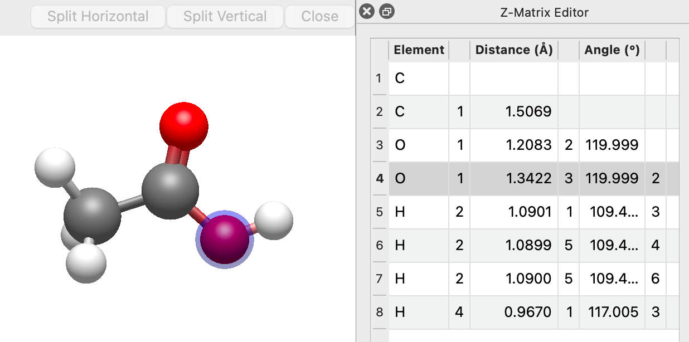

Z-Matrix Editor#
Tip
New in 2.1 The Z-Matrix Editor is new in version 2.1.
A z-matrix describes a molecule by its internal coordinates rather than its Cartesian (\(x, y, z\)) coordinates. Each atom is placed relative to atoms that have already been placed:
a distance \(r\) to a first reference atom \(a\),
an angle \(\theta\) between the atom, \(a\), and a second reference atom \(b\) (with \(a\) at the vertex),
a dihedral \(\phi\) between the atom, \(a\), \(b\), and a third reference atom \(c\).
The first atom needs no references, the second only a distance, and the third only a distance and an angle. Every later row has all three.
Z-matrices are a natural way to think about bond lengths, angles and torsions, and many quantum chemistry programs accept them as input. The Z-Matrix Editor shows the current molecule as a z-matrix and lets you edit any value directly.

Opening the Editor#
Choose Build ⇒ Z-Matrix Editor…. The editor opens as a panel docked in the main window. Choose the menu item again to hide it.
The table follows the current molecule. Moving atoms with another tool, running an optimization, or switching to a different molecule updates the values in place.
Reading the Table#
The table has one row per atom:
Column |
Meaning |
|---|---|
Row header |
The atom number placed by this row |
Element |
The element symbol of that atom |
(unlabeled) |
Reference atom \(a\) |
Distance (Å) |
Distance from this atom to \(a\) |
(unlabeled) |
Reference atom \(b\) |
Angle (°) |
Angle this atom – \(a\) – \(b\) |
(unlabeled) |
Reference atom \(c\) |
Dihedral (°) |
Dihedral this atom – \(a\) – \(b\) – \(c\) |
The opening rows leave the cells they have no reference for empty, since there is no value to show.
Avogadro picks reference atoms from bonded neighbors wherever possible, so the values are chemically meaningful bond lengths, bond angles and torsions. Separate molecules (for example, a water dimer) are anchored to atoms placed before them, so their relative position is described too.
Note
Rows are listed in z-matrix order, which may differ from the atom numbering: every reference atom must appear in an earlier row. The row header always shows the real atom number, matching the reference columns and the rest of Avogadro. Use the Reorder Atoms button to make the two orders match.
Selecting rows in the table selects those atoms in the 3D view, and selecting atoms in the view highlights their rows.
Editing Values#
Double-click a cell to edit it.
- Distance, Angle, Dihedral
Type a new value. The atom placed by that row moves, along with the part of the molecule attached to it, and the rest of the molecule stays where it is. Distances must be between 0.5 and 1000 Å, and angles between 0° and 180°. A value outside these limits is ignored, as is an edit that would move the two end atoms closer than 0.5 Å.
- Element
Type an element symbol (e.g.,
Cl) or an atomic number (e.g.,17). UseXxor0for a dummy atom.- Reference atoms (\(a\), \(b\), \(c\))
Type a different atom number to measure the row against another atom. No atoms move: the same geometry is described against different atoms, so only the values change. A reference must be an atom placed in an earlier row, and it can’t be the row’s own atom or an atom the row already uses. If Avogadro rejects a reference, the message below the table explains why.
Every edit can be undone with Edit ⇒ Undo.
Constraining Values#
Right-click a Distance, Angle or Dihedral cell and choose Constrain Distance, Constrain Angle or Constrain Dihedral to hold that coordinate at its current value during geometry optimization. Constrained values show a 🔒 marker, and hovering over one shows the value it is constrained to. Choose Remove Constraint to release it.
If several rows are selected, the action applies to all of them.
These are the same constraints used by the optimizer and listed in the constraints dialog. See Geometry Constraints for more about using constraints.
See Also#
Measure Tool – Measure and edit distances, angles and dihedrals by clicking atoms
Geometry Constraints – Use constraints during geometry optimization
Build Menu – Other commands for building and editing molecules